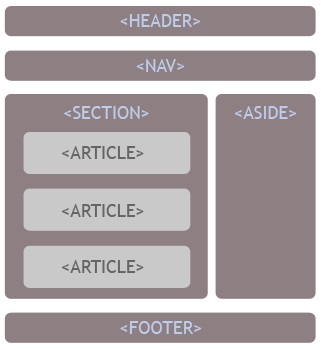

Elaborar recursos educativos digitales para dinamizar las estrategias de
aprendizaje de las Etiquetas semánticas, CSS Grid
Etiquetas semánticas

VIDEO SOBRE ETIQUETAS SEMÁNTICAS
Las etiquetas semánticas ayudan a definir la estructura del documento y permiten que las páginas web sean mejor indexadas por los buscadores. Una etiqueta se califica como semántica si tiene que ver el significado, es decir, si nos informa sobre lo que trata su contenido
Fernández, A. G., & Vivar, I. U. (2006). Funciones textuales: etiquetas semánticas. In Linguistique plurielle: Valencia. 25, 26 et 27 Octobre 2006 (pp. 383-395). Departamento de Lingüística Aplicada.
CSS Grid
VIDEO SOBRE CSS GRID
CSS Grid layout contiene funciones de diseño dirigidas a los desarrolladores de aplicaciones web. El CSS grid se puede utilizar para lograr muchos diseños diferentes. También se destaca por permitir dividir una página en áreas o regiones principales, por definir la relación en términos de tamaño, posición y capas entre partes de un control construido a partir de primitivas HTML.
Attardi, J. (2020). Cuadrícula CSS. En CSS moderno (págs. 255-280). Apress, Berkeley, CA.